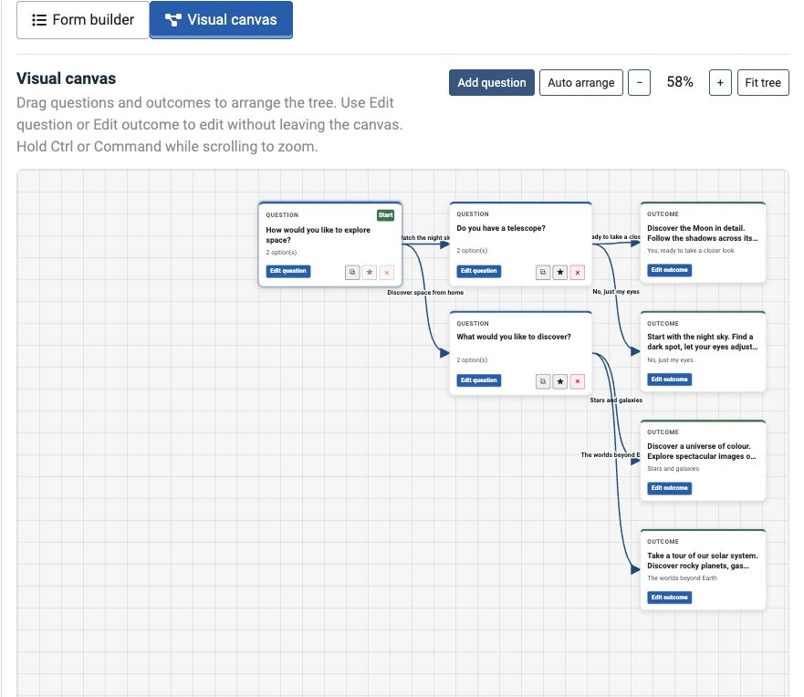

Article 4 · Existing article · /joomla-extensions/decision-tree-free/decision-tree-free-demo
Copy preview only. Live Joomla styling and working components are checked during staging.
Decision Tree Free demo
Choose an answer to follow a path through this example. Use Back to revisit a previous question or Reset to start again.
Try the decision tree
The existing live decision tree (ID 1) will render here in Joomla. This local copy preview does not run the live component.
Build your own with the visual canvas
In Decision Tree 1.4.0, the administrator canvas shows the questions, outcomes and their connections. Moving cards changes the layout of the editor; your answer connections determine the visitor’s journey.
